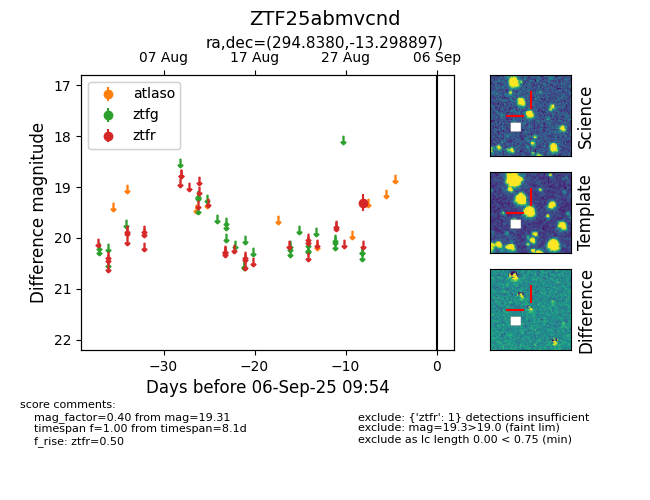

FINK: ZTF25abmvcnd
Lasair: ZTF25abmvcnd
ALeRCE: ZTF25abmvcnd
ZTF25abmvcnd (ztf,fink)
equatorial (ra, dec) = (294.8380,-13.29890)
galactic (l, b) = (26.1849,-16.53787)

last ztfr=19.31
1 ztfr detections